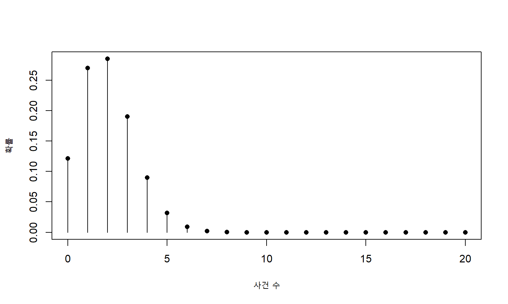
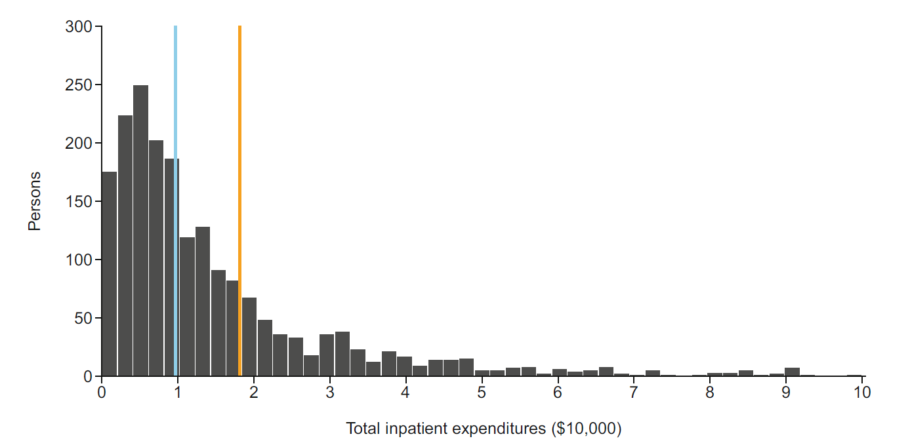
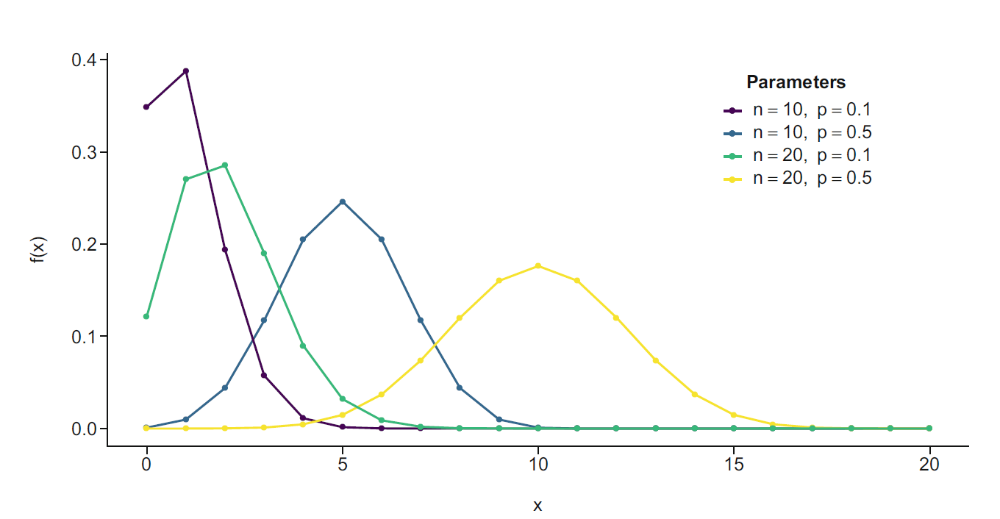
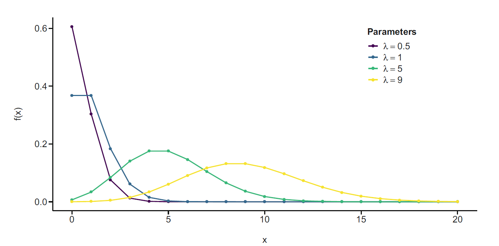
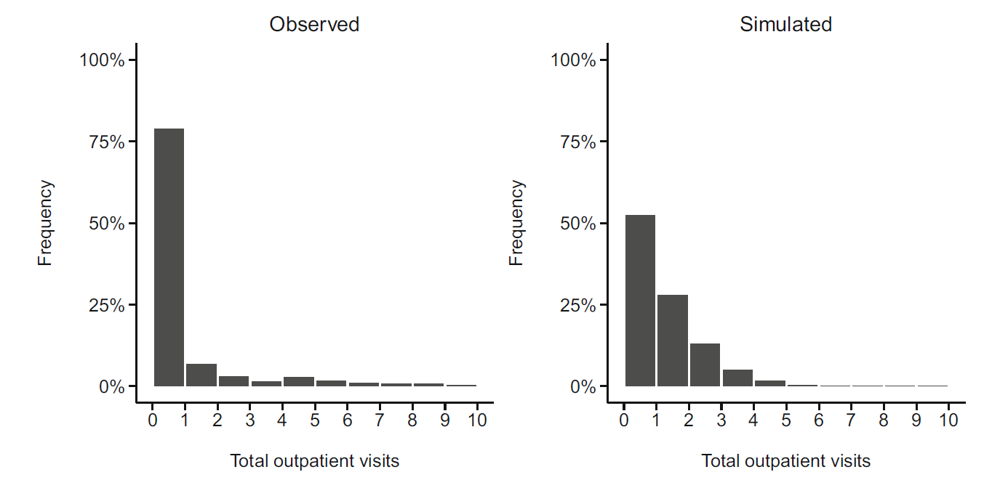
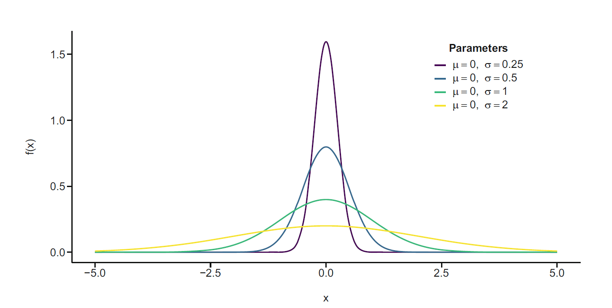
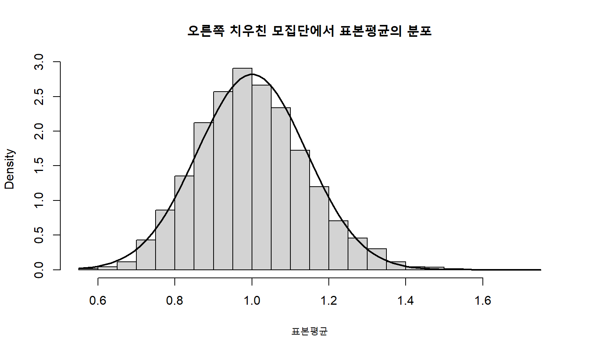
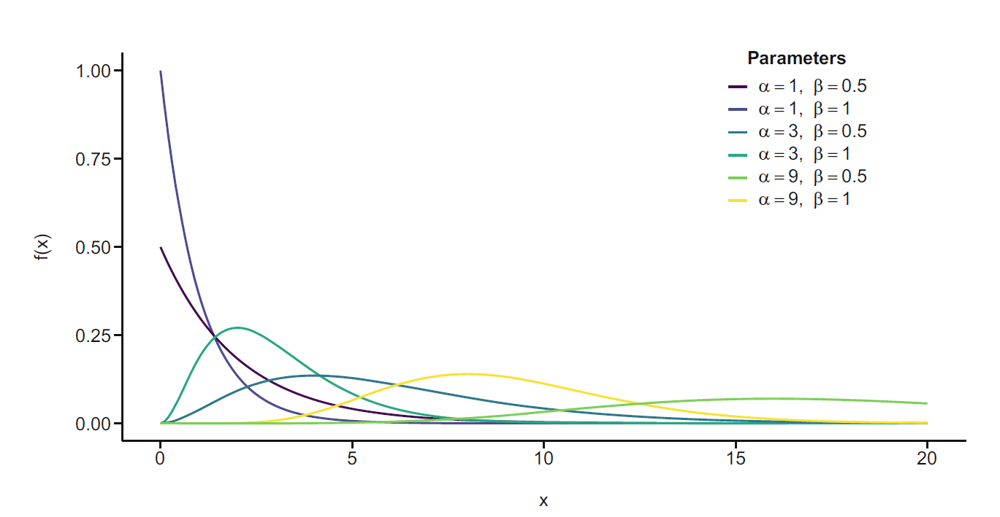
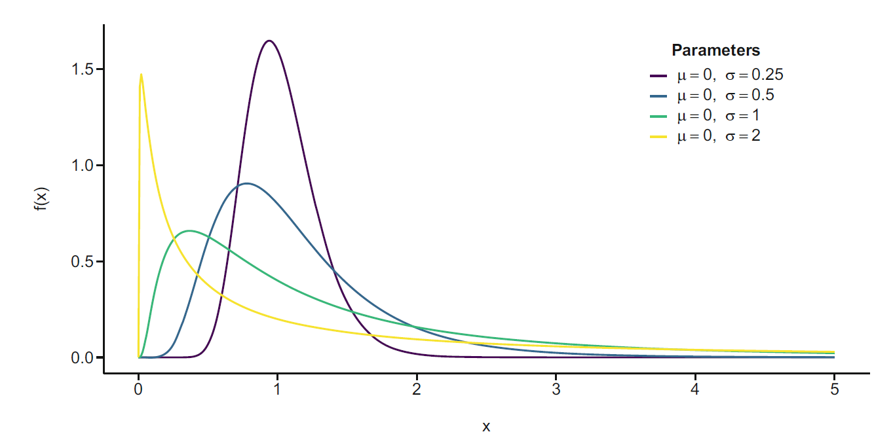
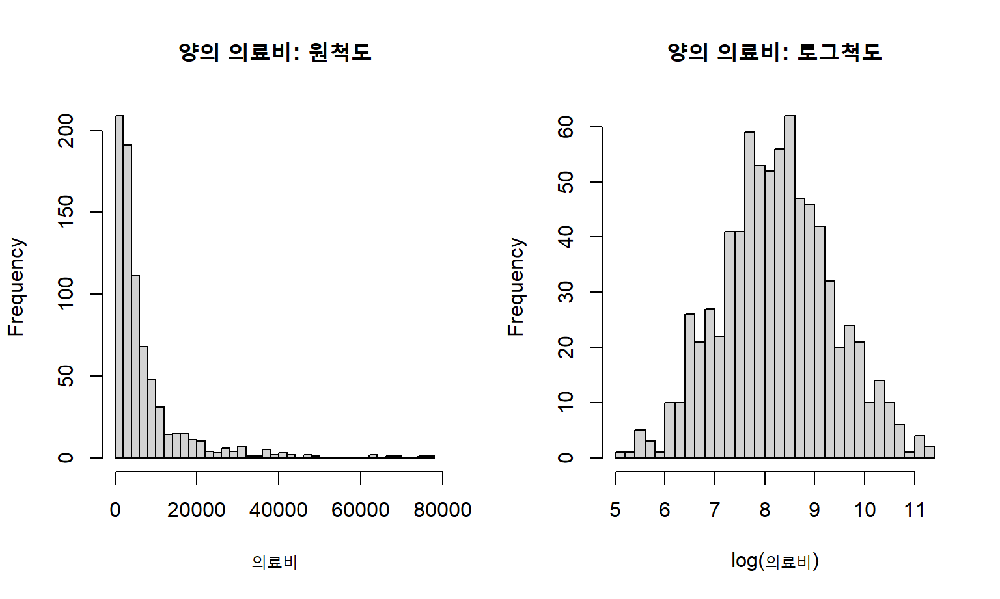

x <- 0:20
plot(x, dbinom(x, size = 20, prob = 0.1), type = "h",
xlab = "사건 수", ylab = "확률")
points(x, dbinom(x, size = 20, prob = 0.1), pch = 16)
통계학의 핵심 목적은 관찰한 표본(sample)을 이용하여 관심 대상 전체인 모집단(population)에 대해 추론하는 것이다. 보건의료 연구에서는 자료의 규모가 아무리 크더라도 연구 결과가 적용되는 모집단을 명확히 정의해야 한다. 표본의 크기와 분석 방법이 적절하더라도 목표 모집단이 불분명하면 결과의 해석과 일반화 가능성을 판단하기 어렵다.
모집단은 연구자가 알고자 하는 대상의 집합이다. 모집단은 실제로 존재하는 유한한 집합일 수도 있고, 연구 목적에 따라 가상적으로 정의된 집합일 수도 있다. 예를 들어 특정 시점에 특정 지역에 거주한 모든 주민은 실제 모집단이며, 앞으로 동일한 치료를 받을 수 있는 모든 환자는 개념적 모집단이다. 중요한 점은 개별 대상이 해당 모집단에 속하는지를 명확한 기준으로 판단할 수 있어야 한다는 것이다.
부분모집단(subpopulation)은 모집단 안에서 일정한 조건을 만족하는 대상의 집합이다. 예를 들어 전체 유방암 환자 모집단에서 호르몬수용체 양성 환자, 또는 전체 성인 모집단에서 65세 이상 인구는 각각 부분모집단을 이룬다. 회귀분석은 공변량의 값으로 정의되는 여러 부분모집단의 평균 또는 확률을 비교하는 방법으로 이해할 수 있다.
표본은 모집단에 관한 정보를 얻기 위해 실제로 관찰한 일부 대상이다. 이상적으로 표본은 확률적 표본추출을 통해 얻는다. 확률표본에서는 각 대상이 표본에 포함될 가능성이 알려져 있으므로 모집단 추론과 불확실성의 정량화가 가능하다. 그러나 많은 보건의료 연구는 단일 의료기관 환자, 특정 보험 가입자, 연구 참여에 동의한 사람과 같은 편의표본을 사용한다. 또한 암등록자료처럼 특정 지역에서 발생한 모든 사례를 수집하는 전수등록 자료도 있다.
표본의 크기와 대표성은 서로 다른 개념이다. 매우 큰 표본이라도 특정 의료기관 이용자만 포함하면 일반 인구를 대표하지 못할 수 있다. 반대로 적절히 설계된 비교적 작은 확률표본은 모집단 추론에 더 유용할 수 있다. 따라서 자료분석 전에는 다음을 확인해야 한다.
보건의료 연구에서는 모집단을 다음 세 수준으로 구분하면 결과의 적용 범위를 더 명확히 설명할 수 있다.
목표 모집단과 자료원 모집단의 차이는 주로 외적 타당도와 관련되고, 자료원 모집단과 연구 표본의 차이는 선택 편향과 관련된다. 대상 \(i\)의 표본 포함 여부를 \(S_i\)라 하고 \(S_i=1\)이면 분석 표본에 포함되었다고 하자. 포함확률은
\[ \pi_i=P(S_i=1\mid X_i) \]
로 표현할 수 있다. 포함확률이 대상의 특성 \(X_i\)에 따라 달라지면 단순 표본평균은 목표 모집단 평균을 반영하지 못할 수 있다. 포함확률을 알거나 추정할 수 있다면 역확률가중 평균
\[ \widehat{\mu}_{w} = \frac{\sum_{i=1}^{n}w_iY_i}{\sum_{i=1}^{n}w_i}, \qquad w_i=\frac{1}{\pi_i} \]
을 사용할 수 있다. 이 가중치는 표본에서 과소대표된 대상에게 더 큰 비중을 부여한다. 다만 가중치는 관찰되거나 올바르게 모형화된 선택기전에 대해서만 보정할 수 있으며, 측정되지 않은 선택요인을 자동으로 해결하지는 않는다.
표본크기는 주로 추정의 정밀도와 관련되고 대표성은 선택기전과 관련된다. 따라서 큰 자료라는 사실만으로 모집단 추론의 타당성이 보장되지는 않는다. 행정자료나 전자의무기록은 표본수가 매우 크더라도 의료이용 여부, 보험자격, 의료기관 접근성과 기록완결성에 의해 선택된 자료일 수 있다.
확률변수(random variable)는 모집단의 각 대상에서 관찰되는 특성을 수치나 범주로 표현한 것이다. 보건의료 자료에서 확률변수의 예는 다음과 같다.
이론적 확률변수는 보통 대문자 \(X\), \(Y\)로 나타내고, 실제 관찰값은 소문자 \(x\), \(y\)로 나타낸다. 예를 들어 연령이라는 확률변수를 \(X\)라고 할 때 특정 환자의 관찰 연령 62세는 \(x=62\)로 표현한다.
확률변수는 크게 범주형과 연속형으로 구분된다.
실제 자료에서는 연속형 변수를 범주화하기도 한다. 예를 들어 체질량지수는 연속형 변수이지만 저체중, 정상, 과체중, 비만으로 구분할 수 있다. 그러나 범주화는 정보 손실과 통계적 검정력 감소를 초래할 수 있으므로 임상적으로 타당한 기준이 있는 경우에만 신중하게 사용해야 한다.
확률변수는 가능한 값의 집합인 지지집합(support)과 함께 정의해야 한다. 재입원 여부의 지지집합은 \(\{0,1\}\)이고, 방문 횟수는 \(\{0,1,2,\ldots\}\)이며, 양의 의료비는 \((0,\infty)\)이다. 지지집합은 사용할 수 있는 확률분포와 회귀모형을 제한한다. 예를 들어 음수가 될 수 없는 결과에 정규모형을 기계적으로 적용하면 음의 예측값이 생성될 수 있고, 0과 1 사이의 확률에 선형모형을 적용하면 범위를 벗어난 예측값이 생길 수 있다.
이항 결과는 지시변수로 표현하면 계산이 단순해진다. 사건 \(A\)의 지시변수는
\[ I(A)= \begin{cases} 1, & A\text{가 발생한 경우},\\ 0, & A\text{가 발생하지 않은 경우} \end{cases} \]
로 정의한다. 지시변수의 기댓값은
\[ E\{I(A)\}=P(A) \]
이므로 사건 여부의 표본평균은 사건 발생비율과 같다. 이 성질을 이용하면 유병률, 위험도, 민감도와 특이도 같은 지표를 평균의 문제로 다룰 수 있다.
변수의 측정척도도 분석방법과 해석을 결정한다. 명목척도는 범주의 순서가 없고, 서열척도는 순서만 있으며 범주 간 간격이 동일하다고 보장되지 않는다. 간격척도는 차이가 의미 있지만 절대적 0이 없고, 비율척도는 0과 비율 모두 해석 가능하다. 서열형 결과를 연속형처럼 처리하려면 범주 간 간격이 동일하다는 추가 가정이 필요하다.
분석의 첫 단계는 연구 질문에 따라 종속변수(dependent variable)와 독립변수(independent variable)를 구분하는 것이다. 종속변수는 결과변수 또는 반응변수라고 하며 일반적으로 \(Y\)로 표시한다. 독립변수는 설명변수, 예측변수, 공변량 또는 특성이라고 하며 \(X\)로 표시한다.
회귀분석의 중심 질문은 \(X\)가 변할 때 \(Y\)의 분포 또는 평균이 어떻게 달라지는가이다. 그러나 독립변수와 종속변수의 구분은 변수 자체의 고정된 속성이 아니라 연구 질문에 의해 결정된다. 운동과 불면의 관계를 연구할 때 운동이 불면을 줄이는지를 묻는다면 운동이 \(X\), 불면이 \(Y\)이다. 반대로 불면이 운동 참여를 감소시키는지를 묻는다면 두 변수의 역할은 바뀐다.
관찰자료에서는 강한 상관관계가 있다고 해서 한 변수를 자동으로 독립변수로 지정해서는 안 된다. 예를 들어 연간 입원 횟수와 연간 의료비는 강하게 관련되지만, 같은 기간에 측정되었다면 두 변수 모두 환자의 건강 상태와 의료 이용 과정에서 함께 발생한 결과일 수 있다. 이 경우 입원 횟수를 단순한 설명변수로 조정하면 관심 효과의 일부를 제거하거나 해석을 왜곡할 수 있다.
설명변수의 통계적 역할은 인과 구조에 따라 달라진다.
같은 변수도 연구 질문과 시간적 위치에 따라 역할이 달라질 수 있다. 예를 들어 치료 후 혈압은 치료가 심혈관 사건에 미치는 효과를 전달하는 매개변수일 수 있지만, 치료 전 혈압은 교란변수일 수 있다. 따라서 공변량 선택은 단순한 단변량 \(p\)값이나 자동 변수선택보다 임상 지식, 시간적 선후관계와 인과도에 근거해야 한다. 매개변수나 충돌변수를 무조건 조정하면 관심 있는 총효과를 제거하거나 새로운 편향을 유발할 수 있다.
확률변수의 분포(distribution)는 그 변수가 가능한 값을 어떤 확률로 갖는지를 나타낸다. 범주형 변수의 분포는 각 범주의 확률로 정의된다. 가능한 범주가 \(K\)개이고 각 확률이 \(p_1,\ldots,p_K\)라면
\[ \sum_{k=1}^{K}p_k=1 \]
을 만족한다.
연속형 확률변수에서는 한 점의 확률이 아니라 구간의 확률을 다룬다. 확률밀도함수(probability density function, PDF)를 \(f(y)\)라고 하면 \(a\)와 \(b\) 사이에 값이 존재할 확률은
\[ P(a<Y\le b)=\int_a^b f(y)\,dy \]
이다. 밀도함수 전체 아래의 면적은 1이다.
밀도함수의 값 \(f(y)\) 자체는 확률이 아니다. 연속형 변수에서는 보통 \(P(Y=y)=0\)이고, 실제 확률은 밀도를 구간에 대해 적분한 면적으로 얻는다. 반면 이산형 변수에서는 확률질량함수(probability mass function, PMF)
\[ p(y)=P(Y=y), \qquad p(y)\ge0, \qquad \sum_y p(y)=1 \]
를 사용한다.
누적분포함수(cumulative distribution function, CDF)는 주어진 값 이하일 확률을 나타낸다.
\[ F(y)=P(Y\le y)=\int_{-\infty}^{y}f(t)\,dt \]
분포의 형태는 대칭성, 치우침, 꼬리의 두께, 봉우리의 수에 따라 기술할 수 있다.
분포의 대표적인 위치 요약은 평균과 중앙값이다. 확률변수 \(Y\)의 평균 또는 기댓값은
\[ E(Y)=\int_{-\infty}^{\infty}y f(y)\,dy \]
이며 이산형 변수에서는
\[ E(Y)=\sum_y yP(Y=y) \]
이다. 중앙값은 누적확률이 0.5가 되는 값이다. 대칭분포에서는 평균과 중앙값이 대체로 일치하지만 오른쪽 치우친 분포에서는 평균이 중앙값보다 크다.

그림의 의료비 분포는 소수의 매우 큰 값 때문에 긴 오른쪽 꼬리를 보인다. 이러한 상황에서 평균은 모집단의 전체 비용 부담을 나타내는 데 중요하지만, 전형적인 개인의 비용을 표현할 때는 중앙값이 더 적절할 수 있다. 어떤 요약치를 사용할지는 연구 질문에 따라 결정해야 한다.
누적분포함수로부터 분위수를 정의할 수 있다. \(q\)분위수는
\[ y_q=F^{-1}(q)=\inf\{y:F(y)\ge q\} \]
이다. 중앙값은 \(q=0.5\), 제1사분위수와 제3사분위수는 각각 \(q=0.25\)와 \(q=0.75\)인 분위수다. 분포의 중앙 50% 폭은
\[ \operatorname{IQR}=Q_{0.75}-Q_{0.25} \]
로 정의한다. 표준편차는 모든 관측값의 크기를 사용하므로 극단값에 민감한 반면, 사분위범위는 순서에 기초하여 치우친 분포에 더 강건하다.
의료비 그림에서 평균이 중앙값보다 오른쪽에 위치하는 것은 일부 고비용 환자가 산술평균을 끌어올렸기 때문이다. 평균은 분포의 무게중심이므로 전체 비용부담과 예산영향을 나타내는 데 중요하고, 중앙값은 전형적인 개인의 비용 수준을 나타내는 데 유용하다. 그림의 긴 오른쪽 꼬리는 평균과 표준편차를 함께 제시하더라도 분포 전체를 충분히 설명하지 못할 수 있음을 보여준다.
확률변수의 함수에 대한 기댓값은
\[ E\{g(Y)\} = \int g(y)f(y)\,dy \]
로 계산한다. 일반적으로 \(E\{g(Y)\}\)와 \(g\{E(Y)\}\)는 같지 않다. 이 차이는 로그변환 결과의 재변환, 위험비의 지수화, 비선형 예측값의 평균을 해석할 때 반복해서 나타난다.
분포족은 여러 가능한 분포를 포함하며, 모수(parameter)는 그중 특정 분포를 결정한다. 예를 들어 정규분포는 평균 \(\mu\)와 분산 \(\sigma^2\)에 의해 정의된다.
\[ Y\sim N(\mu,\sigma^2) \]
모수적 방법은 분포족을 가정하고 표본을 이용하여 모수를 추정한다. 반면 비모수적 방법은 특정 분포족을 강하게 가정하지 않는다. 비모수적이라는 표현은 아무 가정도 없다는 뜻이 아니라 분포의 형태에 대한 가정이 상대적으로 약하다는 뜻이다.
통계모형(statistical model)은 자료 생성 과정에 대한 수학적 가정의 집합이다. 모형에는 다음이 포함될 수 있다.
동일한 연구 질문에 하나의 유일한 모형만 존재하는 경우는 드물다. 좋은 모형은 자료의 핵심 구조를 충분히 반영하면서도 연구 질문에 직접 답하고, 해석 가능하며, 불필요하게 복잡하지 않아야 한다.
모수 \(\theta\)에 의해 분포가 결정된다고 할 때 독립 관측자료 \(y_1,\ldots,y_n\)의 우도함수(likelihood function)는
\[ L(\theta;y) = \prod_{i=1}^{n}f(y_i\mid\theta) \]
로 정의한다. 우도는 모수가 주어졌을 때 자료가 관찰될 가능성을 나타내는 식을, 관찰자료를 고정한 채 모수의 함수로 해석한 것이다. 수치 계산에서는 곱을 합으로 바꾼 로그우도
\[ \ell(\theta;y) = \sum_{i=1}^{n}\log f(y_i\mid\theta) \]
를 주로 사용한다. 최대우도추정량은 로그우도를 가장 크게 하는 모수값이다.
모형을 사용하여 모수를 추정하려면 식별가능성(identifiability)이 필요하다. 서로 다른 모수값이 동일한 관측자료 분포를 만든다면 자료만으로 어느 값이 옳은지 구분할 수 없다. 식별가능성 문제는 표본을 늘려도 해결되지 않는다는 점에서 단순한 정밀도 부족과 다르다. 보건의료 관찰자료에서 인과효과를 추정할 때 필요한 무측정 교란 없음, 양의 확률과 일관성 같은 가정도 넓은 의미에서 관측자료로 효과를 식별하기 위한 조건이다.
모형은 현실 자체가 아니라 현실의 특정 측면을 단순화한 표현이다. 따라서 모형의 유용성은 모든 세부를 완벽하게 재현하는지가 아니라 연구 질문에 필요한 구조를 얼마나 적절하게 보존하는지로 평가해야 한다.
추정(estimation)은 표본을 사용하여 모집단의 모수나 분포 특성을 계산하는 과정이다. 표본평균은 모집단 평균의 추정량이고, 표본중앙값은 모집단 중앙값의 추정량이다.
표본 \(Y_1,\ldots,Y_n\)의 평균은
\[ \bar{Y}=\frac{1}{n}\sum_{i=1}^{n}Y_i \]
이며, 모집단 평균 \(\mu\)의 대표적인 점추정량이다.
통계적 추론(statistical inference)은 추정량과 그 불확실성을 이용하여 모집단에 관한 결론을 내리는 과정이다. 점추정량만 제시하면 표본에 따른 변동을 알 수 없으므로 표준오차, 신뢰구간, 가설검정 결과를 함께 제시한다.
확률변수로 표현된 계산 규칙을 추정량(estimator)이라 하고, 실제 자료를 대입해 얻은 수치를 추정값(estimate)이라 한다. 예를 들어 \(\bar Y\)는 추정량이고 특정 표본에서 얻은 6.4는 추정값이다.
추정량의 반복표본 성질은 다음과 같이 평가한다. 추정량 \(\widehat\theta\)의 편향은
\[ \operatorname{Bias}(\widehat\theta) = E(\widehat\theta)-\theta \]
이고 평균제곱오차는
\[ \operatorname{MSE}(\widehat\theta) = E\left[(\widehat\theta-\theta)^2\right] = \operatorname{Var}(\widehat\theta) + \operatorname{Bias}(\widehat\theta)^2 \]
이다. 평균제곱오차는 분산과 편향을 동시에 평가하므로 약간의 편향을 허용하여 분산을 크게 줄이는 추정량이 더 우수할 수 있다.
표본크기가 증가할수록 \(\widehat\theta\)가 참값 \(\theta\)에 가까워지는 성질을 일치성(consistency)이라 한다. 또한 적절히 표준화한 추정량의 분포가 정규분포에 가까워지는 성질을 점근정규성(asymptotic normality)이라 한다. 많은 회귀계수의 Wald 신뢰구간과 검정은 이 점근정규성에 근거한다.
확률변수 \(Y\)의 분산은 평균으로부터의 제곱편차의 기댓값이다.
\[ \operatorname{Var}(Y)=E\left[(Y-E(Y))^2\right] \]
표준편차는 분산의 제곱근이다.
\[ \operatorname{SD}(Y)=\sqrt{\operatorname{Var}(Y)} \]
표본에서 모집단 분산을 추정할 때는
\[ s^2 = \frac{1}{n-1}\sum_{i=1}^{n}(Y_i-\bar Y)^2 \]
을 사용한다. 분모가 \(n\)이 아니라 \(n-1\)인 이유는 표본평균을 같은 자료에서 추정하면서 자유도 하나를 사용했기 때문이다. 독립·동일분포 표본에서 이 식은 모집단 분산의 불편추정량이다.
표준편차는 개인 관측값의 변이를 나타낸다. 이에 비해 표준오차(standard error)는 추정량의 표본 간 변이를 나타낸다. 동일한 모집단에서 같은 방법으로 표본을 반복 추출해 추정량을 계산하면 추정값은 매번 조금씩 달라진다. 이 추정량의 표준편차가 표준오차이다.
독립이고 동일한 분포를 따르는 표본에서 표본평균의 표준오차는
\[ \operatorname{SE}(\bar{Y})=\frac{\sigma}{\sqrt{n}} \]
이고 실제로는 \(\sigma\) 대신 표본표준편차 \(s\)를 사용한다.
\[ \widehat{\operatorname{SE}}(\bar{Y})=\frac{s}{\sqrt{n}} \]
표본크기가 커질수록 표준오차는 \(1/\sqrt{n}\)의 비율로 감소한다. 표본크기를 두 배로 늘려도 표준오차가 절반이 되는 것은 아니며, 표준오차를 절반으로 줄이려면 대략 네 배의 표본이 필요하다.
표준오차는 자료의 변이뿐 아니라 추정방법과 모형에 의존한다. 동일한 점추정값을 산출하는 두 모형도 분산 가정이나 상관구조가 다르면 표준오차가 달라질 수 있다.
독립성 가정이 깨지면 표본평균의 분산은 단순히 \(\sigma^2/n\)이 아니다. 일반적으로
\[ \operatorname{Var}(\bar Y) = \frac{1}{n^2} \left[ \sum_{i=1}^{n}\operatorname{Var}(Y_i) + 2\sum_{i<j}\operatorname{Cov}(Y_i,Y_j) \right] \]
이다. 동일 병원 환자나 같은 대상의 반복측정값처럼 관측값 사이에 양의 상관이 있으면 공분산 항이 양수가 되어 표준오차가 증가한다. 이 구조를 무시하면 신뢰구간이 지나치게 좁아지고 제1종 오류가 증가한다.
군집크기가 대략 \(m\)이고 군집내상관계수가 \(\rho\)일 때 단순한 설계효과는
\[ \operatorname{DEFF}\approx1+(m-1)\rho \]
로 표현된다. 유효표본크기는 대략 \(n/\operatorname{DEFF}\)이므로 관측 대상 수가 많더라도 군집내상관이 크면 실제 정보량은 크게 감소한다.
신뢰구간은 추정량의 불확실성을 구간으로 표현한다. 정규근사를 사용할 수 있을 때 95% 신뢰구간은 일반적으로
\[ \widehat{\theta}\pm 1.96\operatorname{SE}(\widehat{\theta}) \]
형태로 계산한다. 표본이 작고 분산을 표본에서 추정하는 경우에는 표준정규분포 대신 \(t\)분포의 임계값을 사용한다.
95% 신뢰구간의 빈도주의적 해석은 같은 표본추출과 추정 절차를 무한히 반복할 때 생성되는 구간의 약 95%가 참 모수를 포함한다는 것이다. 이미 계산된 특정 구간에 대해 참 모수가 95% 확률로 포함된다고 해석하는 것은 고전적 빈도주의 해석과 다르다.
정규근사 신뢰구간은 다음의 확률명제에서 유도된다.
\[ P\left( -1.96 \le \frac{\widehat\theta-\theta} {\operatorname{SE}(\widehat\theta)} \le 1.96 \right) \approx0.95 \]
이를 \(\theta\)에 대해 정리하면
\[ P\left( \widehat\theta-1.96\operatorname{SE}(\widehat\theta) \le \theta \le \widehat\theta+1.96\operatorname{SE}(\widehat\theta) \right) \approx0.95 \]
가 된다. 신뢰구간의 폭은 표준오차에 비례하므로 표본크기, 자료의 변이, 군집 구조와 추정방법의 효율성에 영향을 받는다. 구간이 좁다는 것은 정밀도가 높다는 뜻이지 편향이 작다는 뜻은 아니다. 선택 편향이나 측정오차가 있으면 매우 좁은 구간도 잘못된 값 주변에 형성될 수 있다.
양측 유의수준 0.05의 Wald 검정과 95% Wald 신뢰구간은 서로 대응한다. 귀무가설값 \(\theta_0\)가 신뢰구간에 포함되지 않으면 동일한 표준오차를 사용한 양측 검정의 \(p\)값은 0.05보다 작다. 작은 표본, 비대칭 분포, 정확검정, 프로파일 우도 또는 부트스트랩 구간에서는 이 관계가 정확히 일치하지 않을 수 있다.
보건의료 연구에서는 공변량 \(X\)의 값으로 정의되는 부분모집단의 결과 평균에 관심을 갖는다. 조건부 평균(conditional mean)은
\[ E(Y\mid X=x) \]
으로 나타내며, \(X=x\)인 대상에서 결과 \(Y\)의 평균이다.
반면 주변 평균(marginal mean)은 \(X\)에 대해 평균낸 전체 모집단의 평균이다.
\[ E(Y)=E_X\{E(Y\mid X)\} \]
\(X\)가 범주형이고 가능한 값이 \(x_1,\ldots,x_K\)라면
\[ E(Y)=\sum_{k=1}^{K}E(Y\mid X=x_k)P(X=x_k) \]
이다.
다음 표는 자기평가 건강상태에 따른 연간 총 의료비의 조건부 평균을 예시한다.
| 자기평가 건강상태 | 표본수 | 평균 의료비 | 구성비 |
|---|---|---|---|
| 매우 좋음 | 3,775 | 3,617 | 0.1615 |
| 좋음 | 7,790 | 4,597 | 0.3333 |
| 보통 | 7,235 | 6,087 | 0.3095 |
| 나쁨 | 3,374 | 9,539 | 0.1444 |
| 매우 나쁨 | 1,199 | 15,052 | 0.0513 |
주변 평균은 각 조건부 평균에 해당 집단의 구성비를 곱해 합산한다.
\[ E(Y)=\sum_k E(Y\mid X=x_k)P(X=x_k) \]
조건부 효과와 주변 효과는 일반적으로 같지 않다. 특히 비선형 모형에서는 회귀계수로 표현되는 조건부 효과와 모집단 평균 확률의 차이로 표현되는 주변 효과가 상당히 다를 수 있다.
주변 평균 식은 반복기댓값의 법칙(law of iterated expectations)이다. 이를 회귀모형과 결합한 것이 표준화 또는 g-계산이다. 처치 \(A\)와 공변량 \(X\)가 있을 때 처치수준 \(a\)에서의 표준화 평균은
\[ \widehat\mu(a) = \frac{1}{n} \sum_{i=1}^{n} \widehat E(Y\mid A=a,X=X_i) \]
로 계산한다. 각 대상의 공변량은 그대로 두고 모든 대상이 처치 \(a\)를 받았다고 가정한 예측값을 평균한다. 두 처치수준의 차이 \(\widehat\mu(1)-\widehat\mu(0)\)는 목표 모집단의 평균 결과 차이로 해석할 수 있다.
선형모형에서는 상호작용이 없고 같은 공변량 분포를 사용할 때 조건부 평균차와 주변 평균차가 일치하는 경우가 많다. 그러나 로지스틱 회귀의 오즈비처럼 비선형 연결함수를 사용하는 효과척도는 교란이 없더라도 조건부 효과와 주변 효과가 다를 수 있다. 이를 비축약성(non-collapsibility)이라 한다. 따라서 조정 오즈비와 표준화 위험차는 서로 다른 질문에 답하며, 하나를 다른 하나의 단순한 보정값으로 해석해서는 안 된다.
둘 이상의 확률변수를 함께 고려할 때 결합분포(joint distribution)를 사용한다. 두 변수 \(X\)와 \(Y\)의 결합분포는 가능한 모든 조합 \((x,y)\)의 확률을 기술한다.
주변분포는 결합분포에서 다른 변수를 합하거나 적분하여 얻는다.
\[ P(Y=y)=\sum_x P(X=x,Y=y) \]
연속형 변수에서는 합 대신 적분을 사용한다.
조건부분포는 결합확률을 조건 사건의 확률로 나누어 정의한다.
\[ P(Y=y\mid X=x)=\frac{P(X=x,Y=y)}{P(X=x)} \]
두 변수가 독립이면
\[ P(X=x,Y=y)=P(X=x)P(Y=y) \]
이 성립한다.
혼합분포(mixture distribution)는 서로 다른 부분집단의 분포가 결합된 형태다. 전체 모집단이 건강상태가 양호한 집단과 중증질환 집단으로 구성되어 있다면 의료비 분포는 두 집단 분포의 혼합으로 나타날 수 있다.
\[ f_Y(y)=\sum_{k=1}^{K}\pi_k f_k(y),\qquad \sum_{k=1}^{K}\pi_k=1 \]
여기서 \(\pi_k\)는 \(k\)번째 잠재집단의 비율이고 \(f_k(y)\)는 그 집단의 분포다. 의료비 자료에서 0의 질량과 양의 연속분포가 결합된 이부분 구조도 혼합분포의 중요한 예이다.
두 변수의 선형적 연관성은 공분산과 상관계수로 요약할 수 있다.
\[ \operatorname{Cov}(X,Y) = E\{(X-E(X))(Y-E(Y))\} \]
\[ \rho_{XY} = \frac{\operatorname{Cov}(X,Y)} {\operatorname{SD}(X)\operatorname{SD}(Y)} \]
독립이면 공분산은 0이지만 공분산이 0이라고 해서 일반적으로 독립인 것은 아니다. 상관계수는 선형적 의존성만 표현하므로 U자형 관계나 부분집단 혼합으로 생긴 복잡한 관계를 놓칠 수 있다.
전체 변이는 조건부 분포를 이용하여 집단 내부 변이와 집단 간 변이로 분해할 수 있다. 총분산의 법칙은
\[ \operatorname{Var}(Y) = E\{\operatorname{Var}(Y\mid X)\} + \operatorname{Var}\{E(Y\mid X)\} \]
이다. 첫 항은 부분집단 내부의 평균 변이이고, 둘째 항은 부분집단 평균 사이의 변이다. 전체 의료비 변이가 큰 이유가 각 질환군 내부의 개인차 때문인지 질환군 간 평균 차이 때문인지 구분할 때 유용하다.
혼합분포의 평균과 분산은
\[ E(Y)=\sum_{k=1}^{K}\pi_k\mu_k \]
\[ \operatorname{Var}(Y) = \sum_{k=1}^{K}\pi_k\sigma_k^2 + \sum_{k=1}^{K}\pi_k(\mu_k-\mu)^2 \]
로 표현된다. 두 번째 식은 전체 변이가 성분 내부 변이와 성분평균 간 변이의 합임을 보여준다. 서로 다른 임상 아형이 섞여 있으면 각 아형 내부 분산이 작더라도 전체 분포는 넓거나 다봉형이 될 수 있다.
0의 질량과 양의 연속분포가 결합된 의료비 자료에서 \(P(Y=0)=\pi_0\)라 하면
\[ E(Y)=(1-\pi_0)E(Y\mid Y>0) \]
이다. 전체 평균은 비용 발생확률과 비용이 발생한 대상의 평균 비용이 함께 결정한다.
변수 변환은 자료의 척도를 바꾸어 분포의 형태를 개선하거나 관계를 더 단순하게 표현하는 방법이다. 가장 흔한 변환은 로그변환이다.
\[ Y^*=\log(Y) \]
로그변환은 큰 값을 상대적으로 더 많이 압축하므로 오른쪽 치우친 분포를 완화한다. 0이 포함된 경우에는 문맥에 따라
\[ Y^*=\log(Y+c) \]
와 같이 양의 상수 \(c\)를 더할 수 있다. 그러나 \(c\)의 선택은 해석에 영향을 줄 수 있으므로 기계적으로 사용해서는 안 된다.
변환의 목적은 단순히 정규성을 만드는 데만 있지 않다. 로그변환은 절대 차이보다 비율 차이가 중요한 상황에서 자연스러운 척도를 제공한다. 예를 들어
\[ \log(Y_1)-\log(Y_0)=\log\left(\frac{Y_1}{Y_0}\right) \]
이므로 로그척도에서의 차이는 원척도에서의 비율과 연결된다.
변환 후 결과를 원척도로 되돌릴 때는 비선형성 때문에 주의해야 한다. 일반적으로
\[ E\{g(Y)\}\ne g\{E(Y)\} \]
이다. 따라서 로그값의 평균을 지수화한 값이 원자료의 산술평균과 같지 않다.
비선형 변환과 기댓값의 순서를 바꿀 수 없는 이유는 Jensen 부등식과 관련된다. 지수함수는 볼록함수이므로
\[ E(e^X)\ge e^{E(X)} \]
이다. 따라서 로그값의 평균을 지수화한 값은 원척도 산술평균보다 일반적으로 작다.
비선형 변환된 추정량의 분산은 델타 방법(delta method)으로 근사할 수 있다. \(\widehat\theta\)의 분산이 \(V\)이고 \(g\)가 미분 가능하면
\[ \operatorname{Var}\{g(\widehat\theta)\} \approx \left[g'(\theta)\right]^2V \]
이다. 예를 들어 로그위험비 \(\widehat\beta\)를 위험비 \(e^{\widehat\beta}\)로 변환하면
\[ \operatorname{SE}(e^{\widehat\beta}) \approx e^{\widehat\beta}\operatorname{SE}(\widehat\beta) \]
이다. 다만 변환 후 분포가 비대칭이면 위험비 척도에서 대칭형 표준오차 구간을 만드는 것보다 로그척도에서 신뢰구간을 계산한 뒤 양 끝점을 지수화하는 것이 더 안정적이다.
이항 결과 \(Y\)가 사건 발생이면 1, 비발생이면 0을 갖는다고 하자. 사건 발생확률을 \(p\)라고 하면
\[ P(Y=y)=p^y(1-p)^{1-y},\qquad y\in\{0,1\} \]
이며 이를 베르누이분포라고 한다.
\[ Y\sim \operatorname{Bernoulli}(p) \]
평균과 분산은
\[ E(Y)=p,\qquad \operatorname{Var}(Y)=p(1-p) \]
이다. 이항변수의 평균은 곧 사건 발생확률이다.
서로 독립인 베르누이 확률변수 \(Y_1,\ldots,Y_n\)의 합
\[ S=\sum_{i=1}^{n}Y_i \]
은 이항분포를 따른다.
\[ S\sim \operatorname{Binomial}(n,p) \]
확률질량함수는
\[ P(S=s)={n\choose s}p^s(1-p)^{n-s},\qquad s=0,1,\ldots,n \]
이고 평균과 분산은
\[ E(S)=np,\qquad \operatorname{Var}(S)=np(1-p) \]
이다.

이항분포는 시행 횟수 \(n\)이 고정되고 각 시행이 독립이며 동일한 사건확률 \(p\)를 가질 때 적절하다. 동일한 의료진이나 의료기관에 속한 환자는 서로 유사할 수 있으므로 군집이 존재하면 독립성 가정이 위반될 수 있다.
x <- 0:20
plot(x, dbinom(x, size = 20, prob = 0.1), type = "h",
xlab = "사건 수", ylab = "확률")
points(x, dbinom(x, size = 20, prob = 0.1), pch = 16)
관측된 사건 수가 \(s\)일 때 이항우도는
\[ L(p;s) \propto p^s(1-p)^{n-s} \]
이다. 로그우도를 미분하여 0으로 두면 최대우도추정량
\[ \widehat p=\frac{s}{n}=\bar Y \]
을 얻는다. 독립 이항표본에서
\[ \operatorname{Var}(\widehat p) = \frac{p(1-p)}{n} \]
이므로 추정 표준오차는
\[ \widehat{\operatorname{SE}}(\widehat p) = \sqrt{\frac{\widehat p(1-\widehat p)}{n}} \]
이다. 사건이 매우 드물거나 표본이 작으면 정규근사 Wald 구간이 0보다 작거나 1보다 커질 수 있으므로 Wilson 구간이나 정확 이항구간이 더 적절할 수 있다.
이항분포 그림에서 \(p\)가 작으면 분포가 0에 가까운 사건 수에 집중되고 오른쪽으로 치우친다. \(p=0.5\)에 가까워질수록 대칭에 가까워지며, 분산 \(np(1-p)\)는 \(p=0.5\)에서 가장 크다. 시행 횟수 \(n\)이 증가하면 사건 수의 가능한 범위는 넓어지지만 사건 비율 \(S/n\)의 표준오차는 감소한다.
결과가 \(K\)개의 범주 중 하나를 갖고 각 범주의 확률이 \(p_1,\ldots,p_K\)라고 하자.
\[ \sum_{k=1}^{K}p_k=1 \]
한 대상의 결과는 범주형 분포를 따르며, \(n\)명의 독립 관측에서 각 범주의 빈도 \((N_1,\ldots,N_K)\)는 다항분포를 따른다.
\[ (N_1,\ldots,N_K)\sim \operatorname{Multinomial}(n;p_1,\ldots,p_K) \]
확률질량함수는
\[ P(N_1=n_1,\ldots,N_K=n_K) = \frac{n!}{n_1!\cdots n_K!} \prod_{k=1}^{K}p_k^{n_k} \]
이다. 각 범주의 기대빈도는 \(np_k\)이며, 서로 다른 범주의 빈도는 총합이 \(n\)으로 고정되어 있으므로 음의 공분산을 갖는다.
\[ \operatorname{Var}(N_k)=np_k(1-p_k) \]
\[ \operatorname{Cov}(N_j,N_k)=-np_jp_k,\qquad j\ne k \]
한 범주의 빈도가 증가하면 총합이 \(n\)으로 고정되어 있으므로 다른 범주의 빈도는 감소해야 한다. 이 제약이 서로 다른 범주의 빈도 사이에 음의 공분산을 만든다.
각 대상 \(i\)의 범주를 \(K\)개의 지시변수 \(Y_{ik}=I(Y_i=k)\)로 표현하면
\[ \sum_{k=1}^{K}Y_{ik}=1, \qquad E(Y_{ik})=p_k \]
이다. 표본 범주비율 \(\widehat p_k=N_k/n\)에 대해서는
\[ \operatorname{Cov}(\widehat p_j,\widehat p_k) = -\frac{p_jp_k}{n}, \qquad j\ne k \]
가 성립한다. 따라서 범주별 비율을 서로 독립인 이항결과처럼 분석하면 공분산 구조를 무시하게 된다. 다항 로지스틱 회귀는 이 구조를 공변량에 따라 달라지는 범주확률로 확장한다.
포아송분포는 일정한 시간, 공간 또는 인구 규모에서 발생한 사건 수를 모형화한다. 사건 수 \(Y\)가 평균 발생수 \(\lambda\)를 갖는 포아송분포를 따르면
\[ Y\sim \operatorname{Poisson}(\lambda) \]
이고
\[ P(Y=y)=\frac{e^{-\lambda}\lambda^y}{y!},\qquad y=0,1,2,\ldots \]
이다. 포아송분포의 중요한 특성은 평균과 분산이 같다는 것이다.
\[ E(Y)=\lambda,\qquad \operatorname{Var}(Y)=\lambda \]
포아송분포는 사건 수뿐 아니라 발생률(rate)을 모형화할 때 중요하다. 대상 \(i\)의 관찰시간 또는 위험노출량을 \(t_i\), 단위 노출당 발생률을 \(r_i\)라 하면
\[ Y_i\sim\operatorname{Poisson}(t_ir_i) \]
로 둘 수 있다. 로그를 취하면
\[ \log E(Y_i)=\log t_i+\log r_i \]
가 되므로 포아송 회귀에서는 \(\log t_i\)를 계수가 1로 고정된 오프셋(offset)으로 포함한다. 관찰기간이 다른 환자의 사건 수를 직접 비교하면 노출시간 차이를 효과 차이로 오해할 수 있다.

실제 보건의료 계수자료는 포아송분포보다 변이가 큰 경우가 많다. 이를 과산포(overdispersion)라고 한다.
\[ \operatorname{Var}(Y)>E(Y) \]

과산포는 개인별 사건 발생성향이 다르거나, 반복 사건 간 의존성이 존재하거나, 설명되지 않은 군집 구조가 있을 때 발생한다. 개인별 포아송 평균이 감마분포를 따른다고 가정하여 혼합하면 음이항분포가 유도된다.
음이항분포의 대표적인 평균-분산 관계는
\[ E(Y)=\mu, \qquad \operatorname{Var}(Y)=\mu+\alpha\mu^2 \]
이다. \(\alpha>0\)는 과산포 모수이며 \(\alpha\to0\)이면 포아송분포에 가까워진다.
포아송–감마 혼합을 통해 음이항분포가 유도되는 과정을 살펴보자. 개인 \(i\)의 잠재 발생률을 \(\Lambda_i\)라 하고
\[ Y_i\mid\Lambda_i\sim\operatorname{Poisson}(\Lambda_i), \qquad \Lambda_i\sim\operatorname{Gamma}(a,b) \]
라고 하자. 총기댓값과 총분산의 법칙을 적용하면
\[ E(Y_i)=E(\Lambda_i) \]
\[ \operatorname{Var}(Y_i) = E(\Lambda_i)+\operatorname{Var}(\Lambda_i) \]
가 된다. 개인별 잠재 발생률의 변이가 포아송 평균에 추가되어 과산포가 발생한다. 잠재 발생률을 적분하여 제거하면 사건 수의 주변분포가 음이항분포가 된다.
관찰자료와 포아송 모의분포를 비교한 그림에서 관찰자료는 같은 평균의 포아송분포보다 0과 큰 방문 횟수가 동시에 많다. 이는 중심만 이동한 것이 아니라 개인 간 발생성향의 이질성 때문에 분포의 양쪽 끝이 함께 증가했음을 보여준다.
과산포와 제로과잉(zero inflation)은 구분해야 한다. 음이항분포 자체도 0을 많이 생성할 수 있지만, 구조적으로 사건이 발생할 수 없는 집단과 사건 발생 가능 집단이 혼합되어 있다면 제로과잉 포아송 또는 허들모형이 더 자연스러울 수 있다. 모형 선택은 0의 임상적 의미와 자료 생성 과정을 고려해야 한다.
set.seed(2026)
mu <- 2
poisson_count <- rpois(5000, lambda = mu)
negative_binomial_count <- rnbinom(5000, mu = mu, size = 0.8)
c(
poisson_mean = mean(poisson_count),
poisson_var = var(poisson_count),
nb_mean = mean(negative_binomial_count),
nb_var = var(negative_binomial_count)
)poisson_mean poisson_var nb_mean nb_var
1.984200 1.928336 2.035000 7.224820 정규분포는 평균 \(\mu\)를 중심으로 대칭이며 표준편차 \(\sigma\)가 퍼짐을 결정한다.
\[ Y\sim N(\mu,\sigma^2) \]
밀도함수는
\[ f(y)=\frac{1}{\sqrt{2\pi\sigma^2}} \exp\left[-\frac{(y-\mu)^2}{2\sigma^2}\right] \]
이다.

정규분포에서는 약 68%가 \(\mu\pm\sigma\) 안에, 약 95%가 \(\mu\pm1.96\sigma\) 안에 존재한다. 표준화 변수는
\[ Z=\frac{Y-\mu}{\sigma} \]
이며 평균 0, 분산 1을 갖는다.
정규분포가 중요한 이유는 모든 보건의료 결과가 정규분포를 따르기 때문이 아니라 중심극한정리(central limit theorem) 때문이다. 독립 확률변수의 합 또는 평균은 일정한 조건에서 표본크기가 커질수록 정규분포에 가까워진다.
\[ \frac{\bar{Y}-\mu}{\sigma/\sqrt{n}} \xrightarrow{d}N(0,1) \]
이 성질은 표본평균과 많은 회귀계수 추정량의 신뢰구간 및 가설검정에 사용된다. 중심극한정리는 모집단 자료가 정규분포라는 뜻이 아니라 추정량의 표본분포가 정규분포에 가까워진다는 뜻이다.
set.seed(2026)
B <- 5000
n <- 50
sample_means <- replicate(B, mean(rexp(n, rate = 1)))
hist(sample_means, breaks = 35, probability = TRUE,
xlab = "표본평균", main = "오른쪽 치우친 모집단에서 표본평균의 분포")
curve(dnorm(x, mean = 1, sd = 1 / sqrt(n)), add = TRUE, lwd = 2)
정규분포 그림에서 평균이 같은 세 곡선은 중심 위치는 동일하지만 표준편차가 커질수록 봉우리가 낮아지고 꼬리가 넓어진다. 밀도 아래 전체 면적은 항상 1이므로 분포가 넓어질수록 중앙부의 높이는 낮아져야 한다. 표준편차는 단순한 관측범위가 아니라 평균 주변에 값이 얼마나 밀집하는지를 나타낸다.
중심극한정리의 수렴 속도는 모집단 분포의 치우침과 꼬리 두께에 따라 달라진다. 의료비처럼 극단적으로 치우치고 큰 값이 자주 나타나는 자료에서는 \(n=30\)이라는 경험적 기준만으로 정규근사를 보장할 수 없다. 관측치가 강하게 의존하거나 분산이 존재하지 않는 분포에서는 표준적인 중심극한정리가 적용되지 않을 수 있다.
R 예제에서 개별 관측값은 오른쪽으로 치우친 지수분포를 따르지만, 50개 관측값의 평균을 반복 계산한 분포는 평균 1 주변에서 대칭적인 형태를 보인다. 중첩된 정규곡선은 이론적 표준오차 \(1/\sqrt{50}\)을 사용한 근사이며, 히스토그램과 곡선의 유사성이 중심극한정리의 작동을 시각적으로 보여준다.
감마분포는 0보다 큰 연속형 결과를 모형화하며 의료비, 재원일수, 생존시간과 같이 오른쪽으로 치우친 자료에 유용하다. 형상모수 \(\alpha\)와 비율모수 \(\beta\)를 사용하는 감마분포의 밀도함수는
\[ f(y)=\frac{\beta^\alpha}{\Gamma(\alpha)} y^{\alpha-1}e^{-\beta y},\qquad y>0 \]
이다.
평균과 분산은
\[ E(Y)=\frac{\alpha}{\beta}, \qquad \operatorname{Var}(Y)=\frac{\alpha}{\beta^2} \]
이다.
감마분포의 변동계수는
\[ \operatorname{CV}(Y) = \frac{\sqrt{\operatorname{Var}(Y)}}{E(Y)} = \frac{1}{\sqrt{\alpha}} \]
이다. 형상모수 \(\alpha\)가 클수록 상대적 변이가 작고 분포가 대칭에 가까워진다. 감마분포 그림에서 형상모수가 작은 곡선은 0 부근에서 높고 오른쪽 꼬리가 길며, 형상모수가 증가하면 완만한 단봉형으로 변한다. 비율모수 \(\beta\)는 값의 전반적인 수평척도를 조절한다.

로그정규분포는 로그변환한 값이 정규분포를 따르는 분포다. 즉
\[ \log(Y)\sim N(\mu,\sigma^2) \]
이면 \(Y\)는 로그정규분포를 따른다. 밀도함수는
\[ f(y)=\frac{1}{y\sigma\sqrt{2\pi}} \exp\left[-\frac{(\log y-\mu)^2}{2\sigma^2}\right],\qquad y>0 \]
이다.

로그정규분포 그림에서 로그척도의 표준편차가 증가하면 원척도의 오른쪽 꼬리가 급격히 길어진다. 로그척도에서는 평균을 중심으로 대칭이지만 지수변환은 큰 양의 편차를 작은 음의 편차보다 훨씬 크게 확대한다. 이 비대칭적 확대가 원척도에서 평균과 중앙값의 차이를 만든다.
로그정규분포의 중앙값과 평균은 서로 다르다.
\[ \operatorname{Median}(Y)=e^\mu \]
\[ E(Y)=\exp\left(\mu+\frac{1}{2}\sigma^2\right) \]
따라서 로그변환한 의료비의 평균을 단순히 지수화하면 원척도의 평균이 아니라 중앙값에 해당한다. 이 차이는 로그척도 분산이 클수록 커진다.
| 의료비 유형 | 원척도 산술평균 | 로그값 평균의 지수화 | 두 값의 차이가 생기는 이유 |
|---|---|---|---|
| 총 의료비 | 큰 값의 영향을 크게 받음 | 기하평균에 가까움 | 긴 오른쪽 꼬리 |
| 외래 의료비 | 산술평균이 대체로 더 큼 | 극단값 영향이 감소 | 로그변환의 압축 효과 |
| 입원 의료비 | 차이가 매우 클 수 있음 | 전형적 양의 비용 수준 | 매우 두꺼운 꼬리 |
로그정규 모형에서 평균을 원척도로 복원하려면 \(\sigma^2/2\) 보정 또는 스미어링 추정과 같은 재변환 방법이 필요하다.
로그선형모형
\[ \log Y_i=X_i^\top\beta+\varepsilon_i \]
에서 \(\varepsilon_i\sim N(0,\sigma^2)\)이면
\[ E(Y_i\mid X_i) = \exp(X_i^\top\beta) \exp\left(\frac{\sigma^2}{2}\right) \]
이다. 따라서 단순한 \(\exp(X_i^\top\widehat\beta)\)는 조건부 중앙값에 가깝고 조건부 평균을 얻으려면 분산 보정이 필요하다.
오차의 정규성을 강하게 가정하고 싶지 않다면 Duan의 스미어링 계수
\[ \widehat S = \frac{1}{n}\sum_{i=1}^{n}\exp(\widehat\varepsilon_i) \]
를 사용하여
\[ \widehat E(Y\mid X) = \exp(X^\top\widehat\beta)\widehat S \]
로 재변환할 수 있다. 오차분산이 공변량에 따라 달라지는 이분산성이 있으면 하나의 공통 스미어링 계수로 충분하지 않을 수 있다.
set.seed(2026)
y <- rlnorm(5000, meanlog = 8, sdlog = 1.2)
c(
arithmetic_mean = mean(y),
median = median(y),
exp_mean_log = exp(mean(log(y)))
)arithmetic_mean median exp_mean_log
5989.402 2969.242 2952.278 가설검정은 표본자료를 바탕으로 모집단에 관한 명제를 평가하는 절차다. 일반적으로 검정은 귀무가설(null hypothesis) \(H_0\)와 대립가설(alternative hypothesis) \(H_1\)로 구성된다.
예를 들어 두 집단의 평균 의료비가 같은지를 검정한다면
\[ H_0:\mu_1-\mu_0=0 \]
\[ H_1:\mu_1-\mu_0\ne0 \]
으로 설정할 수 있다.
검정통계량은 추정값이 귀무가설의 값에서 표준오차 단위로 얼마나 떨어져 있는지를 나타낸다.
\[ T=\frac{\widehat{\theta}-\theta_0}{\operatorname{SE}(\widehat{\theta})} \]
검정통계량은 귀무가설 아래에서의 표본분포와 함께 정의되어야 한다. 양측 검정은 효과의 방향을 사전에 특정하지 않고, 단측 검정은 한 방향의 효과만을 대립가설로 둔다. 단측 검정은 반대 방향의 큰 효과를 증거로 인정하지 않으므로 자료를 확인한 뒤 임의로 선택해서는 안 된다.
가설은 분석 전에 임상적으로 해석 가능한 모수에 대해 설정해야 한다. 평균 차이, 위험비, 오즈비와 생존확률 차이는 모두 서로 다른 귀무가설을 구성한다. 단순히 “두 집단에 차이가 없다”라고 표현하면 어떤 효과척도에서의 차이인지 불분명하다.
\(p\)값은 귀무가설이 참이라고 가정할 때 관찰된 검정통계량과 같거나 더 극단적인 결과가 나타날 확률이다.
\[ p=P_{H_0}(|T|\ge |t_{\text{obs}}|) \]
\(p\)값은 귀무가설이 참일 확률이 아니며, 연구 결과가 우연일 확률도 아니다. \(p\)값은 귀무가설 아래에서 현재 자료가 얼마나 이례적인지를 나타낸다.
작은 \(p\)값은 자료가 귀무가설과 잘 맞지 않는다는 증거를 제공하지만 효과의 크기나 임상적 중요성을 나타내지 않는다. 표본이 매우 크면 매우 작은 효과도 작은 \(p\)값을 가질 수 있다. 반대로 표본이 작으면 임상적으로 중요한 차이가 있어도 불확실성이 커서 \(p\)값이 클 수 있다.
양측 정규근사 검정에서는
\[ p = 2\left[1-\Phi\left(|t_{\text{obs}}|\right)\right] \]
로 계산한다. 여기서 \(\Phi\)는 표준정규 누적분포함수다. 같은 효과크기라도 표준오차가 작아지면 검정통계량의 절댓값이 커지고 \(p\)값은 작아진다. 따라서 \(p\)값은 효과크기와 정보량이 결합된 지표이지 효과크기만의 척도가 아니다.
\(p\)값은 표본추출, 독립성, 분포와 모형 가정이 적절하다는 조건에서 해석해야 한다. 잘못된 독립성 가정, 자료를 본 뒤의 가설 변경, 선택적 보고, 반복적인 중간분석과 자료의존적 변수선택은 명목상 \(p\)값의 의미를 훼손할 수 있다.
귀무가설이 참인데 이를 기각하는 오류를 제1종 오류라고 하며 그 확률을 \(\alpha\)로 표시한다.
\[ \alpha=P(\text{reject }H_0\mid H_0\text{ true}) \]
대립가설이 참인데 귀무가설을 기각하지 못하는 오류를 제2종 오류라고 하며 그 확률을 \(\beta\)로 표시한다.
\[ \beta=P(\text{do not reject }H_0\mid H_1\text{ true}) \]
검정력은 실제 효과가 있을 때 이를 발견할 확률이다.
\[ \operatorname{Power}=1-\beta \]
검정력은 효과크기, 표본크기, 자료의 변이, 유의수준과 분석방법에 의해 결정된다. 연구 설계 단계에서 임상적으로 의미 있는 최소 효과를 정하고 필요한 표본크기를 계산하는 것이 중요하다.
두 독립집단의 평균 차이 \(\Delta=\mu_1-\mu_0\)를 같은 크기의 집단에서 비교하고 공통 표준편차를 \(\sigma\)라 하면 표준화 효과크기는
\[ d=\frac{\Delta}{\sigma} \]
이다. 대략적인 표본수는 각 집단당
\[ n \approx \frac{2(z_{1-\alpha/2}+z_{1-\beta})^2\sigma^2}{\Delta^2} \]
로 표현된다. 목표 차이 \(\Delta\)가 절반이 되면 필요한 표본수는 약 네 배가 된다. 탈락, 군집, 비순응, 사건률 감소와 다중비교가 예상되면 추가적인 보정이 필요하다.
검정력이 낮은 연구에서 유의하지 않은 결과는 효과가 없다는 증거라기보다 자료가 여러 가능성을 구분하기에 부족하다는 뜻일 수 있다. 이 경우 신뢰구간이 임상적으로 중요한 효과를 포함하는지 확인해야 한다.
분석 결과는 효과크기, 신뢰구간, 임상적 또는 정책적 의미를 중심으로 해석해야 한다. 다음 두 결과를 비교해 보자.
첫 결과는 통계적으로 매우 명확하지만 실제 의미가 작을 수 있다. 둘째 결과는 통계적 불확실성이 크지만 잠재적 효과가 중요할 수 있다. 따라서 \(p\)값만으로 연구 결과를 이분법적으로 판단해서는 안 된다.
실제적 중요성을 평가하려면 사전에 최소 임상적으로 중요한 차이(minimal clinically important difference, MCID) 또는 정책적으로 의미 있는 임계값을 정할 수 있다. 효과추정치의 신뢰구간 전체가 이 임계값보다 큰 경우에는 통계적·임상적 중요성을 함께 지지한다. 반대로 신뢰구간이 0과 MCID를 모두 포함하면 효과 없음, 작은 효과와 중요한 효과를 자료가 구분하지 못하는 상태다.
상대효과와 절대효과의 의미도 구분해야 한다. 상대위험 0.8은 기저위험이 50%일 때 절대위험 10%포인트 감소를 의미하지만 기저위험이 1%일 때는 0.2%포인트 감소에 불과하다. 보건의료 의사결정에서는 상대위험과 함께 절대위험차, 치료필요수와 비용차를 제시하는 것이 중요하다.
여러 가설을 동시에 검정하면 적어도 하나의 거짓 양성이 발생할 확률이 증가한다. 서로 독립인 \(k\)개의 검정을 각각 유의수준 \(\alpha\)로 수행할 때 적어도 한 번 제1종 오류가 발생할 확률은
\[ 1-(1-\alpha)^k \]
이다. \(\alpha=0.05\)일 때 5개의 검정에서는 약 0.226, 10개의 검정에서는 약 0.401이다.
다중비교를 조정하는 대표적인 방법은 다음과 같다.
다중비교 보정은 연구 목적과 가설 구조를 고려하여 선택해야 한다. 사전에 명확한 주요 가설을 정의하고 탐색적 분석과 확증적 분석을 구분하는 것이 가장 중요하다.
다중비교에서 통제하려는 오류의 종류를 먼저 정해야 한다. 가족별 오류율(family-wise error rate, FWER)은 하나 이상의 제1종 오류가 발생할 확률이다.
\[ \operatorname{FWER}=P(V\ge1) \]
여기서 \(V\)는 거짓 양성의 수다. 거짓발견률(false discovery rate, FDR)은 발견된 결과 중 거짓 양성이 차지하는 비율의 기댓값이다.
\[ \operatorname{FDR} =E\left\{\frac{V}{\max(R,1)}\right\} \]
여기서 \(R\)은 전체 기각 수다. FWER는 단 하나의 거짓 양성도 엄격히 제한해야 하는 확증적 연구에 적합하고, FDR은 많은 후보 중 후속 검증 대상을 찾는 오믹스 연구에 자주 사용된다.
Bonferroni 방법은 검정들 사이의 의존성과 관계없이 FWER를 통제하지만 검정 수가 많고 검정들이 강하게 상관되어 있으면 보수적일 수 있다. Holm 방법은 Bonferroni보다 일반적으로 강력하면서도 FWER를 통제한다. Benjamini–Hochberg 방법은 독립 또는 특정한 양의 의존 구조에서 FDR을 통제한다. 방법의 선택은 가장 작은 조정 \(p\)값을 주는지가 아니라 거짓 양성의 비용과 연구 목적에 따라 결정해야 한다.
set.seed(2026)
raw_p <- runif(10)
data.frame(
raw_p = raw_p,
bonferroni = p.adjust(raw_p, method = "bonferroni"),
holm = p.adjust(raw_p, method = "holm"),
fdr = p.adjust(raw_p, method = "BH")
) raw_p bonferroni holm fdr
1 0.69867347 1.0000000 1.0000000 0.7763039
2 0.55653051 1.0000000 1.0000000 0.7260079
3 0.14013996 1.0000000 1.0000000 0.7006998
4 0.28572331 1.0000000 1.0000000 0.7143083
5 0.55536901 1.0000000 1.0000000 0.7260079
6 0.02513115 0.2513115 0.2513115 0.2513115
7 0.46623055 1.0000000 1.0000000 0.7260079
8 0.86101069 1.0000000 1.0000000 0.8610107
9 0.25250118 1.0000000 1.0000000 0.7143083
10 0.58080634 1.0000000 1.0000000 0.7260079재현성(reproducibility)은 동일한 자료와 분석코드로 같은 결과를 얻을 수 있는지를 의미하고, 반복가능성 또는 재현 연구의 일관성(replicability)은 새로운 표본이나 독립 자료에서 유사한 결론이 얻어지는지를 의미한다. 강건성(robustness)은 합리적인 분석 선택이나 모형 가정을 바꾸어도 핵심 결론이 유지되는지를 나타낸다. 세 개념은 관련되어 있지만 동일하지 않다.
강건성을 확인하려면 대상 정의, 노출기간, 결과 정의, 결측처리, 함수형태, 공변량 집합과 분산추정법을 체계적으로 바꾸어 결과의 민감도를 살펴야 한다. 단, 서로 다른 분석이 실제로 동일한 추정대상에 답하고 있는지도 확인해야 한다.
\(p\)값도 표본자료의 함수이므로 표본이 달라지면 달라진다. 한 연구의 \(p\)값이 0.049이고 다른 연구에서 0.051이라고 해서 두 연구의 과학적 결론이 본질적으로 다르다고 볼 수 없다. 결과의 재현성을 높이기 위해서는 다음을 함께 보고해야 한다.
이 절의 코드는 본 장의 주요 개념을 재현할 수 있도록 독립적으로 실행 가능하게 구성한다.
set.seed(2026)
health_data <- data.frame(
age = round(runif(1000, 20, 80)),
diabetes = rbinom(1000, 1, 0.18),
visits = rnbinom(1000, mu = 4, size = 1.2),
cost = ifelse(
rbinom(1000, 1, 0.20) == 1,
0,
rlnorm(1000, meanlog = 8.2, sdlog = 1.1)
)
)
with(health_data, c(
mean_cost = mean(cost),
median_cost = median(cost),
sd_cost = sd(cost),
zero_fraction = mean(cost == 0),
mean_visits = mean(visits),
variance_visits = var(visits)
)) mean_cost median_cost sd_cost zero_fraction mean_visits variance_visits
5394.05845 2453.35427 8934.18196 0.23000 3.82800 17.22564 위 모의자료에서 cost는 0의 질량과 오른쪽으로 치우친 양의 값이 결합된 결과이고, visits는 음이항분포에서 생성된 계수자료다. 따라서 비용은 평균·중앙값·0의 비율을 함께 보고, 방문 횟수는 평균과 분산을 비교해야 한다. variance_visits가 mean_visits보다 크다면 포아송분포의 등산포 가정이 자료와 맞지 않을 가능성을 시사한다.
conditional_mean <- aggregate(
cost ~ diabetes,
data = health_data,
FUN = mean
)
conditional_mean diabetes cost
1 0 5478.899
2 1 4985.640# 관찰된 당뇨병 분포를 이용한 주변 평균
p_diabetes <- prop.table(table(health_data$diabetes))
weighted_mean <- sum(conditional_mean$cost * as.numeric(p_diabetes))
c(
weighted_marginal_mean = weighted_mean,
direct_sample_mean = mean(health_data$cost)
)weighted_marginal_mean direct_sample_mean
5394.058 5394.058 직접 표본평균과 집단별 조건부 평균을 구성비로 가중한 값이 같은 것은 반복기댓값의 법칙을 표본자료에서 확인한 것이다. 여기서는 관찰된 당뇨병 구성비를 사용했기 때문에 현재 표본의 주변 평균을 얻는다. 다른 목표 모집단의 당뇨병 유병률을 가중치로 사용하면 그 모집단에 표준화된 평균을 계산할 수 있다.
n <- nrow(health_data)
mean_cost <- mean(health_data$cost)
se_cost <- sd(health_data$cost) / sqrt(n)
ci_cost <- mean_cost + c(-1, 1) * qnorm(0.975) * se_cost
c(mean = mean_cost, standard_error = se_cost,
lower_95 = ci_cost[1], upper_95 = ci_cost[2]) mean standard_error lower_95 upper_95
5394.0584 282.5236 4840.3223 5947.7946 코드의 se_cost는 개별 의료비의 표준편차가 아니라 표본평균의 표준오차다. qnorm(0.975)는 표준정규분포의 97.5번째 백분위수로 약 1.96이며 양쪽 꼬리에 각각 2.5%를 남긴다.
의료비와 같이 강하게 치우친 자료에서는 정규근사 신뢰구간이 불안정할 수 있다. 이후 장에서는 부트스트랩을 이용하여 평균, 중앙값, 복잡한 주변효과의 불확실성을 계산한다.
positive_cost <- health_data$cost[health_data$cost > 0]
par(mfrow = c(1, 2))
hist(positive_cost, breaks = 35,
main = "양의 의료비: 원척도", xlab = "의료비")
hist(log(positive_cost), breaks = 35,
main = "양의 의료비: 로그척도", xlab = "log(의료비)")
par(mfrow = c(1, 1))원척도와 변환척도 모두를 확인해야 한다. 왼쪽 그림은 실제 비용의 규모, 극단값과 꼬리의 길이를 보여주고, 오른쪽 그림은 상대적 차이와 곱셈적 변이를 더 잘 드러낸다. 로그척도에서 대칭성이 개선되더라도 이것만으로 로그정규 모형이 옳다고 결론내릴 수는 없다. 원척도의 평균을 해석하려면 재변환 편향과 이분산성을 함께 고려해야 한다.